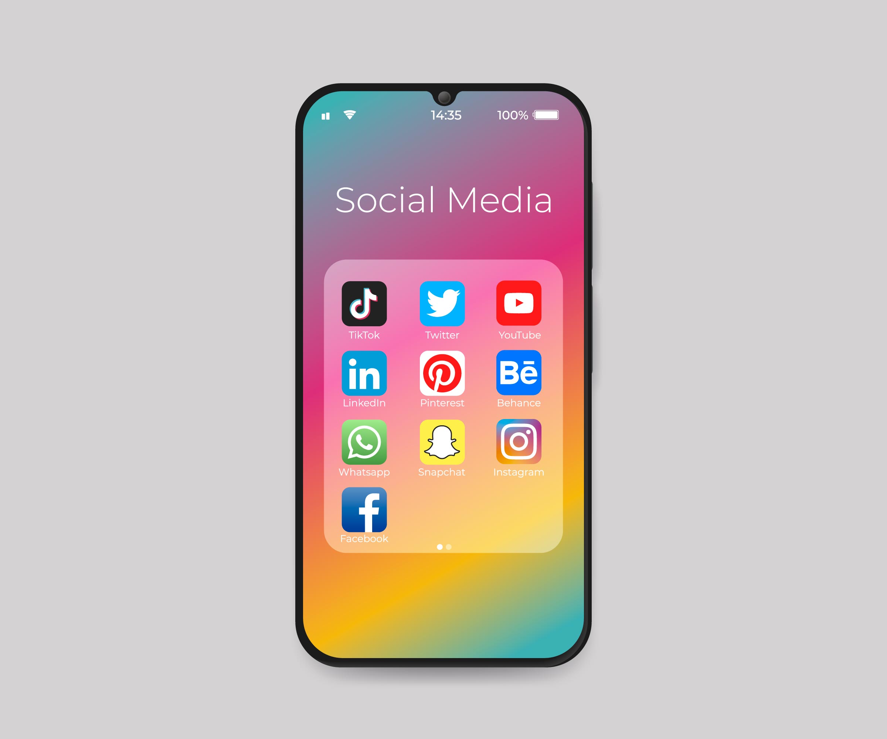

Social media are interactive technologies that facilitate the creation and sharing of content, ideas, interests, and other forms of expression through virtual communities and networks.[1][2] While challenges to the definition of social media arise[3][4] due to the variety of stand-alone and built-in social media services currently available, there are some common features
